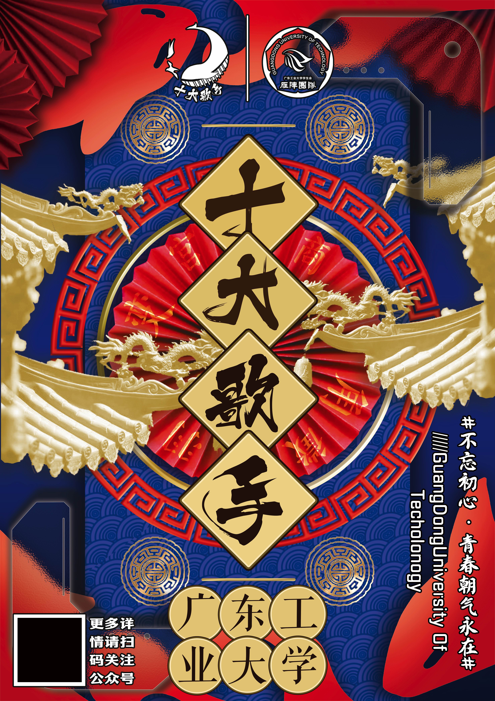
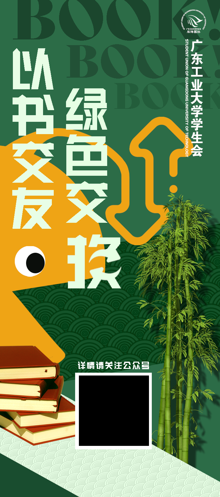
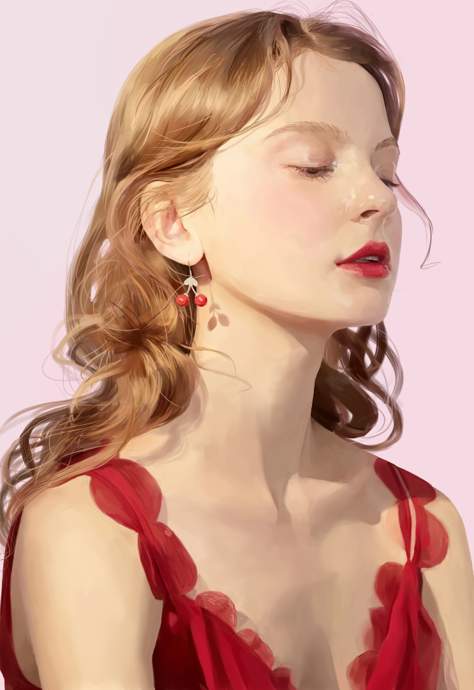
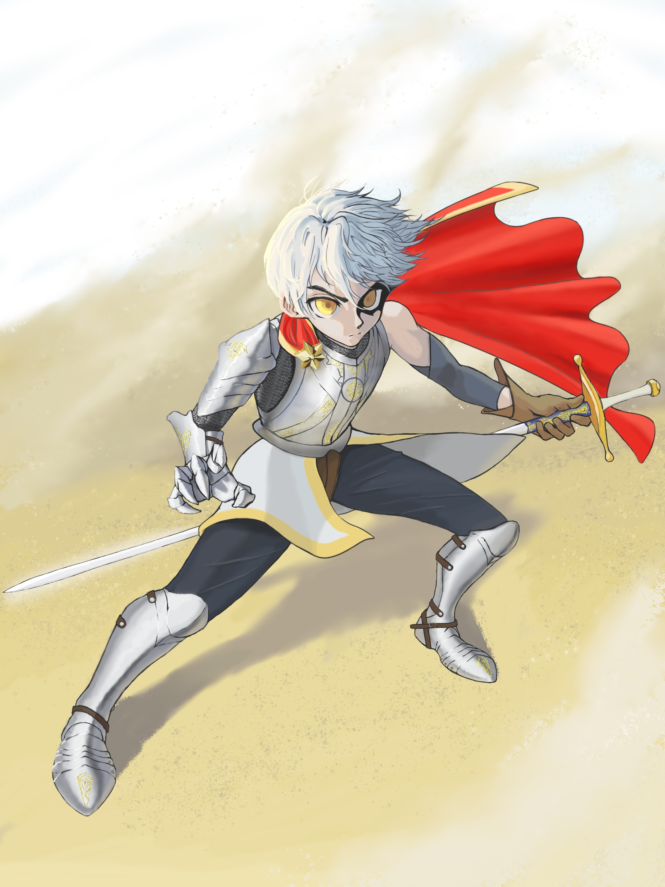
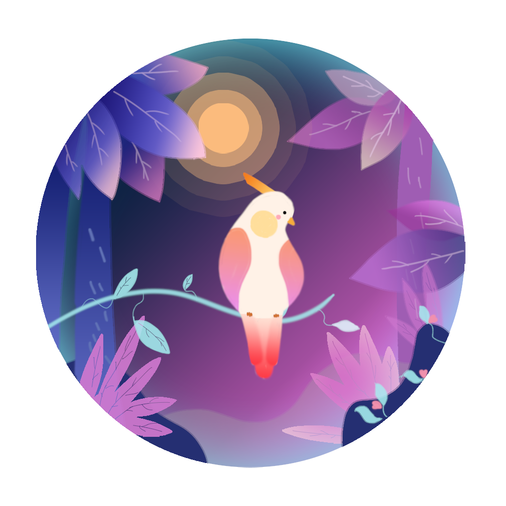
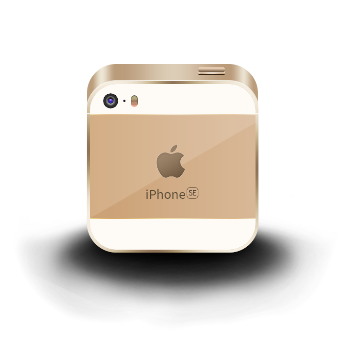

Project Showcase Of Xu
-
游戏设计
项目展示
By 徐家毅点击下方文字查看项目 下拉查看项目 *使用电脑访问以获取完整信息

-
RPG游戏架构开发
项目概述
使用Unity开发的高完成度游戏Demo，手工设计了FSM架构，采用了模块化的设计思路，灵活选用组合、继承、单例等设计模式，使得项目结构清晰，易于后续的功能扩展和维护，在一定程度上展示了我对Unity开发全栈的熟悉。
主要功能
- 完整的游戏架构
- 仓库与装备系统
- 流畅的UI界面
- 玩家技能设计
- 音频管理系统
技术栈
- Unity 6
- C# 脚本编程
- DOTween
- UGUI系统
- 动画系统
-
DS2 UI界面复刻
项目概述
使用UMG对《死亡搁浅2》UI界面的复刻，包含自制的动态UI材质与动态分布函数，精确的UI切分，可以展示我的UI拼接与还原能力以及对UI需求的实现思路。
主要功能
- 深度复刻的UI界面
- 良好的切分图标
- 动态UI分布
- 自定义材质
- 响应式布局
技术栈
- Unreal Engine 5
- 蓝图节点编程
- 材质编辑器
- UMG系统
- 动画系统
-
Photoshop 作品集
技术栈
- Photoshop
- 素材拼接
- 交付输出
- 视觉优化
- UI设计
页面说明
此页展示图皆为独立产出的Photoshop作品，包含在校学生会期间创作的宣传海报和个人美术作品。用以展示设计思维、视觉传达能力以及美术功底。


- 首页
- Unity项目
- UE5项目
- PS作品
- 关于我